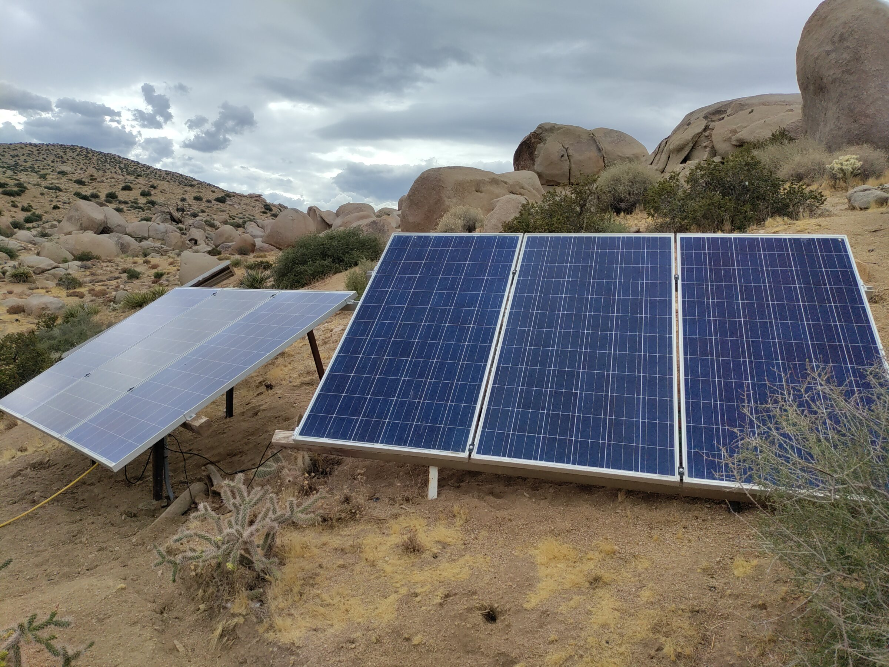
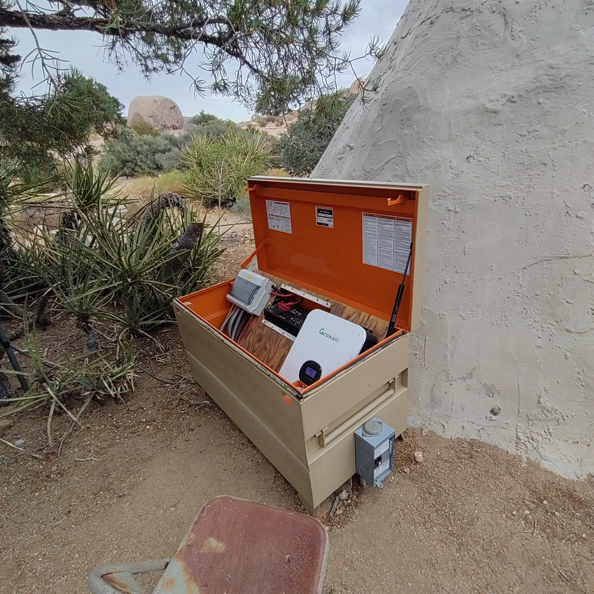
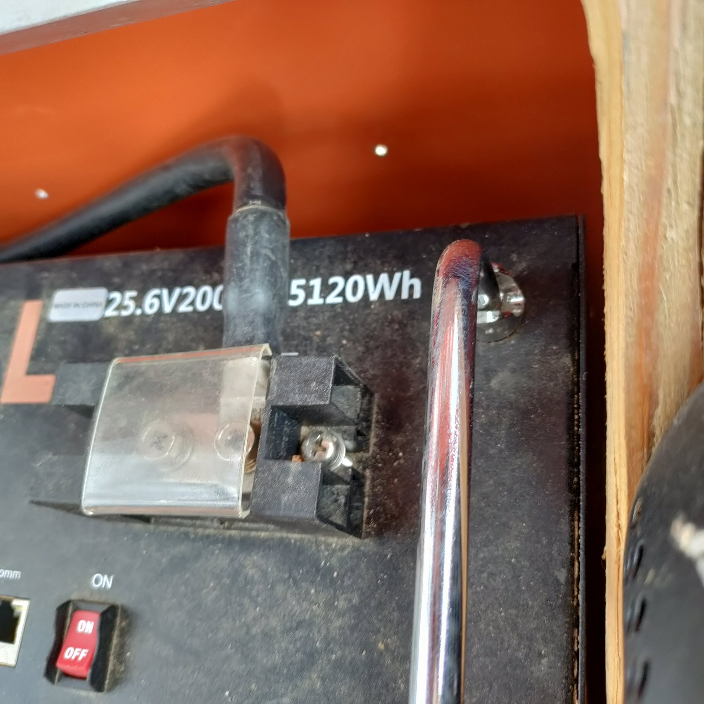
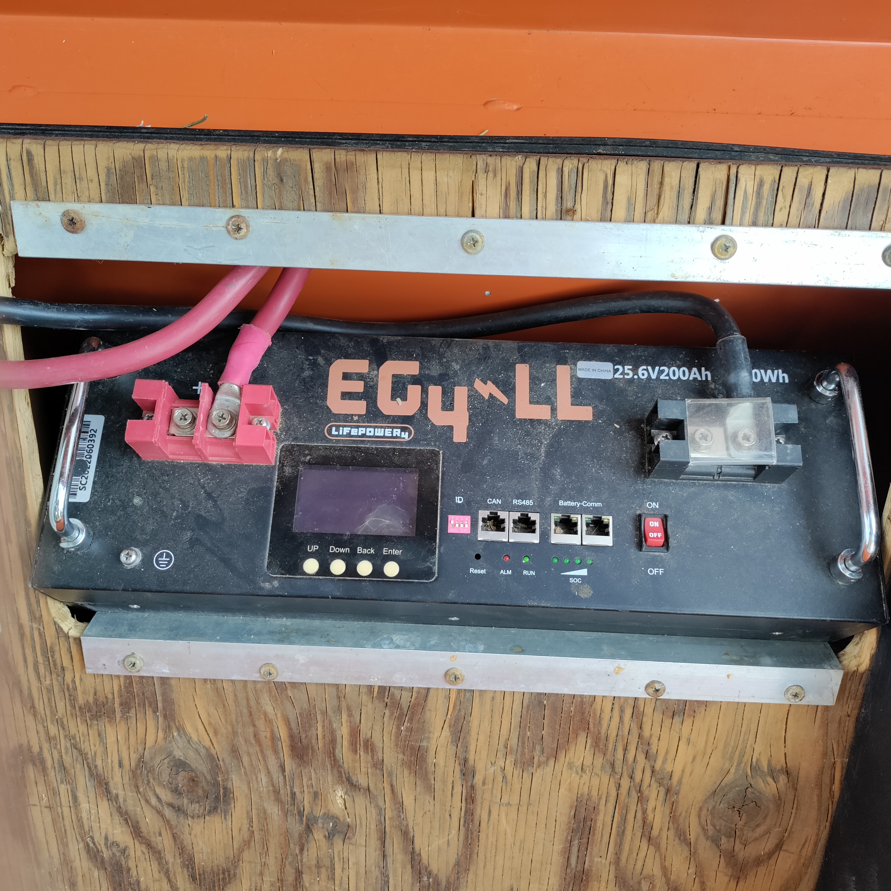
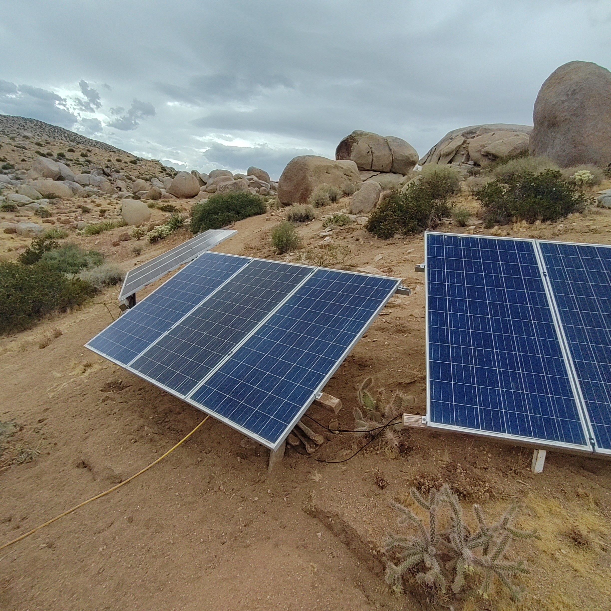
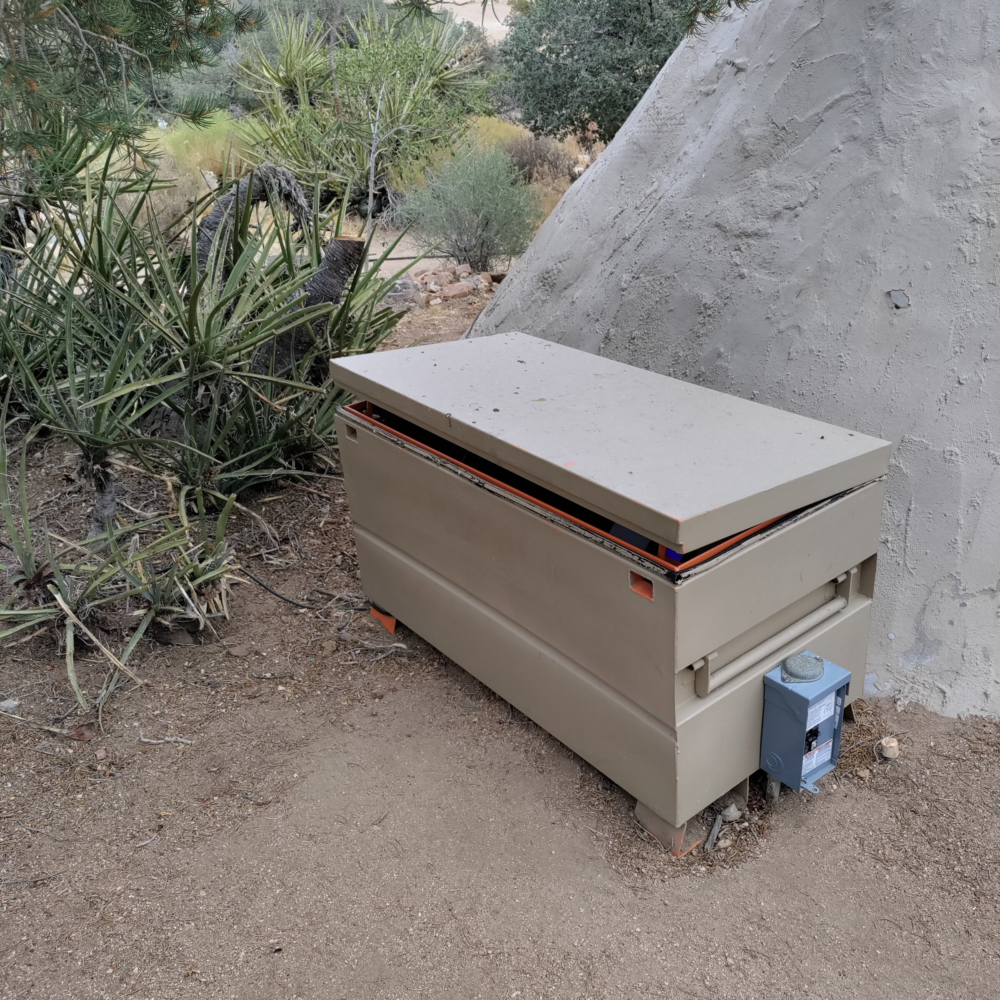
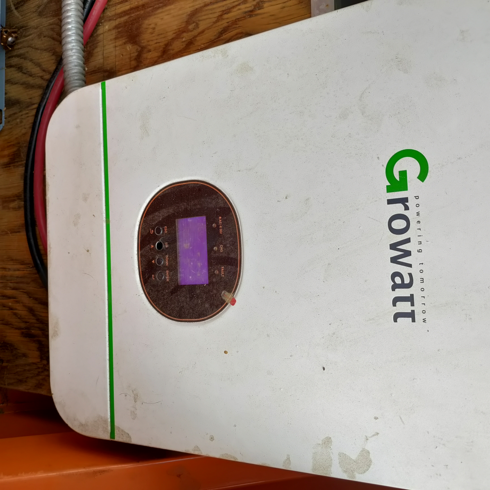

Field Report 003 · Energy
Teepee
Solar
System
Nine solar panels, a Growatt inverter, an EG4 battery, and a propane backup generator provide off-grid power to Boulder Gardens' upper kitchen and teepee area.

The Teepee Solar System supplies off-grid power to the upper kitchen and teepee area at Boulder Gardens Sanctuary.
The system uses nine 305-watt Jinko solar panels, giving the array a total rated capacity of 2.745 kW. Power is managed through a Growatt SPF 3000TL LVM-24P inverter/charger and a 25.6-volt, 200 Ah EG4 battery.
One limitation of the present installation is that the Growatt is undersized relative to the solar array. The nine panels are capable of producing more solar power than the inverter/charger can fully utilize, so part of the array's potential production can be lost under good solar conditions.
A Predator 5000 dual-fuel generator is also part of the system and is normally operated on propane. It provides important backup power when the battery becomes low, during extended cloudy weather, or when heavy kitchen loads exceed what the solar and battery system can comfortably support.
The system has periodically been depleted by high electrical demand, including air-conditioning and electric-kettle use, particularly during periods of reduced sunlight. One practical lesson has been that operating an off-grid communal kitchen requires not only adequate equipment, but also clear instructions so people know when to reduce loads and when to start the backup generator.
The system remains operational, but further documentation is needed to confirm the solar string configuration, electrical protection, conductor sizes, and the best operating thresholds for generator charging.
Photographic Record
The work, seen in place
Selected photographs from the private FieldStation source record.







System Thread
Where this system connects
Public synopsis derived from Boulder Gardens Fieldstation Workbook source record FR003. Detailed equipment records, calculations, unresolved questions, and corrections remain in the workbook.